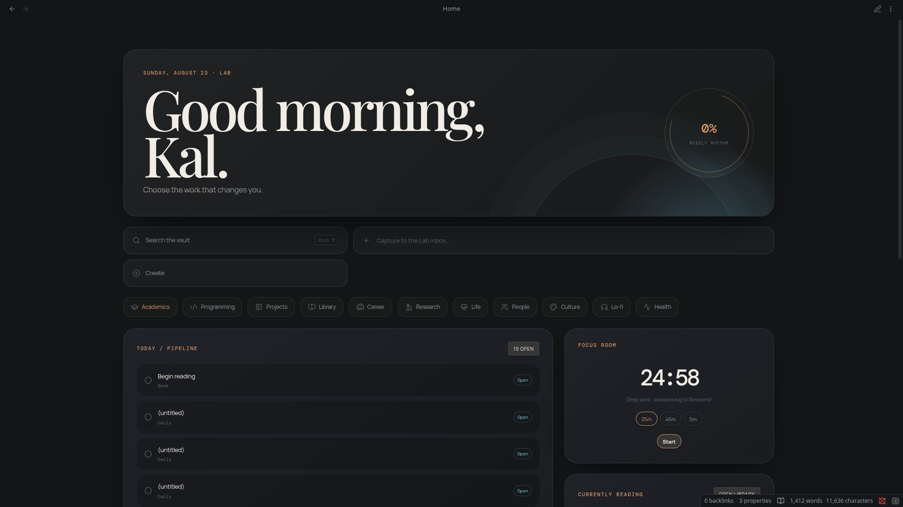
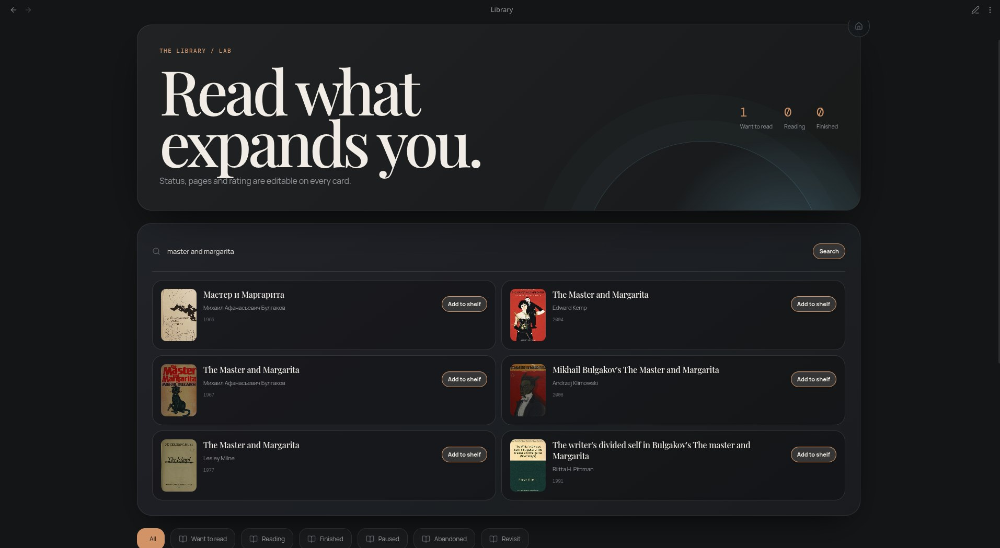

Atelier Lab is a dashboard-first Obsidian vault — nine glass-and-copper studios for your studies, code, reading, and career, with a three.js rain workspace where deep work finally feels like deep work.

Every surface is plain Markdown underneath — the interfaces are DataviewJS applications that read and write your notes.
Editable focus, weekly rhythm, task pipeline with real checkboxes, project cards, and a capture bar that writes to your inbox from anywhere — Ctrl+Shift+Space.
Search by title, author, or ISBN; import with cover art in one click. Update pages, status, and rating right on the card — progress calculates itself.
Three.js rain and dust over a pixel-city night, procedural lightning, mouse-parallax camera. A focus timer that persists, logs sessions, and plays your local tracks.
Application funnel with inline stage changes, interview room, follow-up pills. Machine statuses under the hood so dashboards never silently drop a record.
Drop a file into Books, Concepts, or Works and its properties apply themselves — frontmatter only, zero body clutter.
Unknown statuses, malformed progress, isolated notes — surfaced quietly before they can silently break a dashboard.

#demo seeds whenever you're ready. Start working.| your name / daily focus | Click them directly on Home — saved instantly |
| accent color | Settings → Appearance → accent (#c8895b default) |
| reading goal | Library dashboard → Set goal |
| focus music | Drop .mp3/.ogg files anywhere; pick them on the Lo-fi page |
| lo-fi scene | Swap .obsidian/snippets/lofi-city.svg for any image |